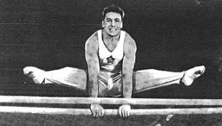

Ferdinand Danis (CSSR)
1959 European PB Silver Medalist

Medal Total
World
Championships: 1 Bronze
European Championships: 1 Silver
Ferdinand was born on January 7, 1929, in Slovakia.
Competition Results
1952
Olympic Games: 7th Team, 13th AA
1954
World Championships: 5th Team, 29th AA
1956
CSSR-SUI Dual Meet: 1st Team 1st AA
Olympic Games: 4th Team, 13th AA, 6th FX
1958
Army Club Spartakiade: 2nd Team, 4th AA, 1st R, 2nd FX, 3rd PB, 5th V
World Championships: 3rd Team, 12th AA
1959
CSSR-GDR Dual Meet: 1st Team, 1st AA
European Championships: 4th AA, 2nd PB, 5th HB, 6th R
1960
GDR-CSSR Dual Meet: 1st Team, 1st AA
Olympic Games: 4th Team, 15th AA
This page was created on December
23, 2004 and was last updated on September 28, 2013.
© Gymn Forum